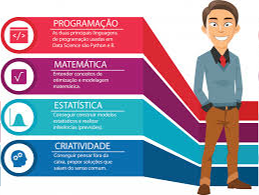

Sobre Mim
Cientista de Dados, formado com experiência em análise de dados, machine learning e inteligência artificial. Minha jornada nessa área da ciência de dados começou com o desejo de não apenas processar números, mas de gerar soluções inovadoras e orientar decisões com base em dados.
Meu foco vai além da simples análise estatística, busco compreender os desafios e necessidades únicas de cada projeto para oferecer soluções personalizadas e eficazes. Acredito na importância de tornar os dados acessíveis e compreensíveis, assim permitindo que empresas e indivíduos utilizem seu potencial máximo em seus próprios projetos.
Além do meu trabalho na área, estou sempre me atualizando com novas tecnologias e metodologias para garantir as melhores práticas em ciência de dados. Estou ansioso para colaborar com você e transformar dados em oportunidades reais. Juntos, podemos trilhar o caminho para inovação e sucesso. 🚀
Sobre a profissão
O cientista de dados é o profissional responsável por coletar, organizar e analisar grandes volumes de dados para gerar insights que auxiliem na tomada de decisões estratégicas. Ele utiliza ferramentas de programação, estatística e inteligência artificial para identificar padrões, prever tendências e resolver problemas em diferentes áreas, como negócios, tecnologia e saúde.
Função
Em suas operações, o profissional cria modelos preditivos e explora dados, usando machine learning e estatística avançada. Ele desenvolve algoritmos e conduz experimentos para resolver problemas específicos e inovar processos.
Importancia
A análise de dados é uma parte central do trabalho de um cientista de dados. Eles aplicam técnicas estatísticas e algoritmos de aprendizado de máquina para descobrir padrões, tendências e relações nos dados. Isso envolve a criação e a execução de modelos preditivos e algoritmos de segmentação, além de realizar análises exploratórias para obter insights.
Conhecimento
Para cumprir suas responsabilidades, os profissionais combinam conhecimentos de estatística, matemática, programação com o domínio de ferramentas específicas. Também são proficientes em linguagens de programação, como Python e R, e têm experiência em lidar com bancos de dados e sistemas de armazenamento de dados.